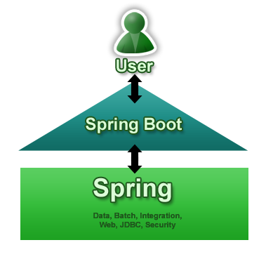

Dave Syer, Phil Webb, 2013
Twitter: @david_syer, @phillip_webb
Email: [dsyer, pwebb]@gopivotal.com
(Introduction to Spring Boot)

Spring Boot:
spring-* projects)An opportunity for Spring to be opinionated
bin/ directory$ spring --help
...
(Or follow instructions on Github for GVM or Brew.)
@RestController
class Example {
@RequestMapping("/")
public String hello() {
return "Hello World!";
}
}
$ spring run app.groovy
... application is running at http://localhost:8080
// import org.springframework.web.bind.annotation.RestController
// other imports ...
@RestController
class Example {
@RequestMapping("/")
public String hello() {
return "Hello World!";
}
}
// import org.springframework.web.bind.annotation.RestController
// other imports ...
// @Grab("org.springframework.boot:spring-boot-web-starter:0.5.0")
@RestController
class Example {
@RequestMapping("/")
public String hello() {
return "Hello World!";
}
}
// import org.springframework.web.bind.annotation.RestController
// other imports ...
// @Grab("org.springframework.boot:spring-boot-web-starter:0.5.0")
// @EnableAutoConfiguration
@RestController
class Example {
@RequestMapping("/")
public String hello() {
return "Hello World!";
}
}
// import org.springframework.web.bind.annotation.RestController
// other imports ...
// @Grab("org.springframework.boot:spring-boot-web-starter:0.5.0")
// @EnableAutoConfiguration
@RestController
class Example {
@RequestMapping("/")
public String hello() {
return "Hello World!";
}
// public static void main(String[] args) {
// SpringApplication.run(Example.class, args);
// }
}
import org.springframework.boot.SpringApplication;
import org.springframework.boot.autoconfigure.EnableAutoConfiguration;
import org.springframework.context.annotation.*;
@RestController
@EnableAutoConfiguration
public class MyApplication {
public static void main(String[] args) {
SpringApplication.run(MyApplication.class, args);
}
}
import org.springframework.boot.SpringApplication;
import org.springframework.boot.autoconfigure.EnableAutoConfiguration;
import org.springframework.web.bind.annotation.*;
@RestController
@EnableAutoConfiguration
public class MyApplication {
@RequestMapping("/")
public String sayHello() {
return "Hello World!";
}
...
}
<dependency>
<groupId>org.springframework.boot</groupId>
<artifactId>spring-boot-starter-web</artifactId>
</dependency>
SpringApplication app = new SpringApplication(MyApplication.class);
app.setShowBanner(false);
app.run(args);
ApplicationContextEmbeddedWebApplicationContext for web appsSpringApplication.run(MyApplication.class, args)@Configuration
@EnableAutoConfiguration
public class MyApplication {
}
@Configuration classes@ConditionalOnClass and @ConditionalOnMissingBeanMaven plugin (using spring-boot-starter-parent):
<plugin>
<groupId>org.springframework.boot</groupId>
<artifactId>spring-boot-maven-plugin</artifactId>
</plugin>
$ mvn package
Gradle plugin:
apply plugin: 'spring-boot'
$ gradle repackage
$ java -jar yourapp.jar
@EnableAutoConfiguration
annotation creates a whole Spring context
CommandLineRunner is a hook to run application-specific code after
the context is created@Component
public class Startup implements CommandLineRunner {
@Override
public void run(String... args) throws Exception {
System.out.println("Hello World");
}
}
Flexible builder style with fluent API for building
SpringApplication with more complex requirements.
new SpringApplicationBuilder(ParentConfiguration.class)
.profiles("adminServer", "single")
.child(AdminServerApplication.class)
.run(args);
ApplicationContext has an EnvironmentEnvironment available since 3.1@Profile switchingSystem properties and OS ENV varsSpringApplication adds command line arguments to the Spring
Environment so you can refer inject them into beans:@Value("${name}")
private String name;
$ java -jar yourapp.jar --name=Dave
$ java -jar target/*.jar --server.port=9000
Just put application.properties in your classpath or next to you jar, e.g.
application.properties
server.port: 9000
Properties can be overridden (command line arg > file > classpath)
Just include snake-yaml.jar and put application.yml in your classpath
application.yml
server:
port: 9000
Both properties and YAML add entries with period-separated paths to
the Spring Environment.
MyProperties.java
@ConfigurationProperties(prefix="mine")
public class MyPoperties {
private Resource location;
private boolean skip = true;
// ... getters and setters
}
application.properties
mine.location: classpath:mine.xml
mine.skip: false
@ConfigurationPropertiesDataBinder so does type coercion and conversion where possibleConversionService additionally discovered by bean name
(same as ApplicationContext)configurationPropertiesValidator bean if presentignoreUnkownFields=true (default)ignoreInvalidFields=false (default)RelaxedDataBinder which accepts common variants of property
names (e.g. CAPITALIZED, camelCased or with_underscores)Also binds to
SpringApplication
Set
spring.config.name - default application, can be comma-separated
listspring.config.location - a Resource path, overrides namee.g.
$ java -jar target/*.jar --spring.config.name=production
Activate external configuration with a Spring profile
application-development.propertiesapplication.yml
defaults: etc...
---
spring:
profiles: development,postgresql
other:
stuff: more stuff...
Set the default spring profile in external configuration, e.g:
application.properties
spring.profiles.active: default, postgresql
java.util.loggingLoggingApplicationContextInitializer sets it all up<dependency>
<groupId>org.springframework</groupId>
<artifactId>spring-jdbc</artifactId>
</dependency>
<dependency>
<groupId>org.hsqldb</groupId>
<artifactId>hsqldb</artifactId>
</dependency>
Extend the demo and see what we can get by just modifying the classpath, e.g.
Easiest: use classpath:/static/**
Many alternatives:
classpath:/public/**classpath:/resources/**classpath:/META-INF/resources/**/ (root of WAR file, see later)
src/main/webapp if building with Maven or Gradlestatic/**public/**documentRoot in EmbeddedServletContextFactory (see
later)index.html (in any of the above locations)spring.thymeleaf.*, e.g.
spring.thymeleaf.prefix:classpath:/templates/ (location of templates)spring.thymeleaf.cache:true (set to false to reload templates
when changed)IDialectthymeleafViewResolverSpringTemplateEnginedefaultTemplateResolverDataSource and JdbcTemplatePlease open an issue on github if you want support for something else
Adds common non-functional features to your application and exposes MVC endpoints to interact with them.
/metrics, /health, /trace, /dump, /shutdown, /beans, /env/infoIf embedded in a web app or web service can use the same port or a
different one (management.port) and/or a different network interface
(management.address) and/or context path (management.context_path).
spring-boot-starter-securitysecurity.basic.enabled=true (on by default)spring-boot-starter-shell-remote to classpathWe like launchable JARs, but you can still use WAR format if you prefer. Spring Boot Tools take care of repackaging a WAR to make it executable.
If you want a WAR to be deployable (in a "normal" container), then you
need to use SpringBootServletInitializer instead of or as well as
SpringApplication.
Remember, it's just Spring...
@Bean definitions@Autowired, @Value and @ComponentScanSpringApplication instance (spring.main.*)SpringApplicationInitializer implementations and enable in
META-INF/spring.factories@EnableAutoConfiguration(disable={WebMvcAutoConfiguration.class})META-INF/spring.factories entry for EnableAutoConfigurationUses standard Java META-INF/services scanning
CompilerAutoConfiguration: add dependencies and importsCommandFactory: add commands via a custom CommandFactory in META-INF/servicesE.g. can add script commands (written in Groovy)
$ spring foo ...
Looks for foo.groovy in ${SPRING_HOME}/bin and
${SPRING_HOME}/ext by default
server.port (see ServerProperties bean)EmbeddedServletContainerCustomizer - all
instances get a callbackEmbeddedServletContainerFactory (replacing
auto-configured one)Motivation: existing solutions for executable JAR are not very robust; executable WAR is very tricky to create.
Response: JarLauncher and WarLauncher with specialized
ClassLoader and JarFile implementations that can find resources in
nested JARs (e.g. lib/*.jar or WEB-INF/lib/*.jar)
Each regular JAR file is sequence of JarEntries
yourapp.original.jar
+----+----+----+-------
| A1 | A2 | A3 | ...
+----+----+----+-----
spring-core.jar
+----+----+----+-------
| S1 | S2 | S3 | ...
+----+----+----+-----
With nested JARs entries are contained within entries.
yourapp.jar
+----+----+----+-+-------------------------
| | | | +----+----+----+-------
| A1 | A2 | A3 | | S1 | S2 | S3 | ...
| | | | +----+----+----+-------
+----+----+----+-+--------------------
We can scan nested JARs and simply seek to the correct part of the outer file when reading a nested entry.
yourapp.jar
+----+----+----+-+-------------------------
| | | | +----+----+----+-------
| A1 | A2 | A3 | | S1 | S2 | S3 | ...
| | | | +----+----+----+-------
+----+----+----+-+--------------------
^ ^ ^ ^ ^ ^
NOTE: In order to seek inside the nested JAR, the containing entry cannot be compressed.
jar:file:/file.jar!/nested.jar!/a/b.txtResource wherever possibleClassLoader.getSystemClassLoader() will fail)You don't need to use it, consider shade or a classic WAR
SpringApplication is an opinionated creator of an
ApplicationContext, but most of the behaviour is encapsulated in
ApplicationContextInitializer implementations. To reproduce the
behaviour of your app in an integration test it is useful to duplicate
those features, so you can use the corresponding initializers, or you
can use a context loader provided by Spring Boot.
Example with externalized configuration:
@RunWith(SpringJUnit4ClassRunner.class)
@ContextConfiguration(classes = IntegrationTestsConfiguration.class,
loader = SpringApplicationContextLoader.class)
public class IntegrationTests {
// Normal Spring Test stuff
}
Hint: use
spring-boot-starter-test
@david_syer, @phillip_webb /
#